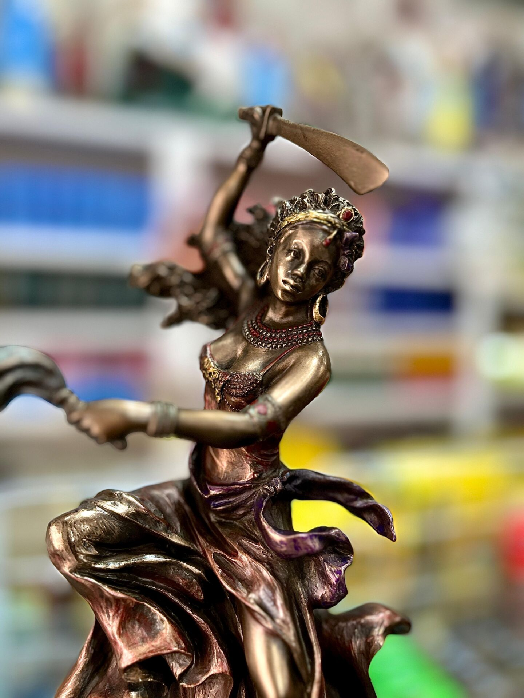
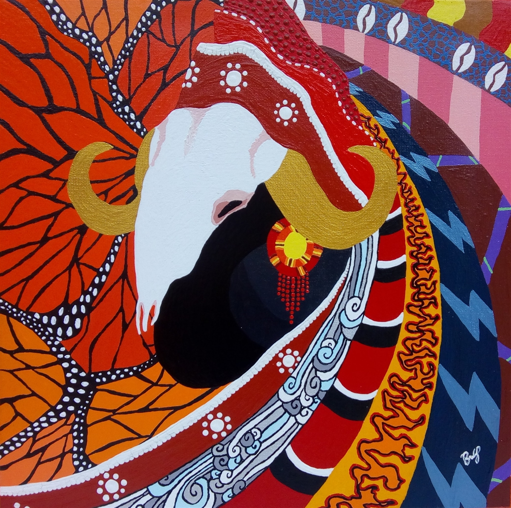
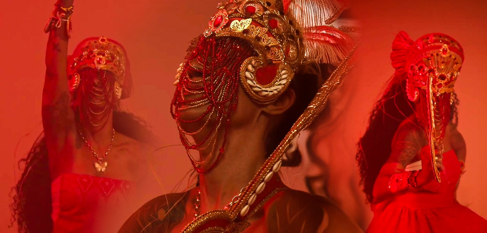

YABÁ DO VENTO
Maternidade, Acolhedora e Cura das emoções profundas.
" Quando o fardo é grande demais, você descansa em meus braços. "
Quem é Oyá?

Iansã, que também é chamada de Oyá, é uma das divindades mais conhecidas, respeitadas e imponentes do Candomblé. Para entender
quem ela é de forma simples, pense na força do vento, dos raios e das grandes tempestades. Ela representa o movimento, a coragem e
a transformação, sendo vista no dia a dia do terreiro como aquela guerreira valente que não tem medo de nada, que defende seus
filhos com unhas e dentes e que traz a energia necessária para vencer qualquer dificuldade. Além de cuidar do tempo, ela tem um
papel muito importante que os pesquisadores sempre destacam: ela é a responsável por guiar as almas das pessoas que já morreram.
No Candomblé, acredita-se que o vento de Iansã limpa o mundo e direciona esses espíritos para que encontrem a paz, impedindo que
fiquem perdidos. Por causa disso, ela é uma figura que inspira muito respeito e proteção, lidando diretamente com o mistério entre
a vida e a morte, por isso conhecida como a rainha dos eguns.
Quando precisar de Iansã e da sua força para que consiga superar barreiras e objetivos clame-a com esta oração conhecida pelas
suas devotas:
“Iansã, mãe e senhora dos ventos e tempestades, das horas aflitas e das almas perdidas. Dona de todas as direções. Operosa
divindade em prol dos desígnios dos filhos de caídos sem norte e vontade. Piedade para nós, criaturas que vivemos, à beira das
tentações, dos abismos, alheios ao amor do pai Olorum. Mãe, empresta-nos tua decisão e tua coragem, para o encontro do nosso
próprio ser. Daí-nos um roteiro de esperança e triunfo. Erradicai a pobreza dos nossos sentimentos, orienta-nos para a verdade,
dentro do caminho de devoção ao supremo doador. Encoraja-nos senhora dos raios, para que nossa própria mente, siga uma só direção:
amar a Olorum. Êparrei, Iansã!”
Toda essa força e devoção também se refletem na cultura brasileira por meio do sincretismo religioso, que é a ligação histórica
de Iansã com Santa Bárbara na Igreja Católica, celebrada no dia 4 de dezembro. Essa união aconteceu porque ambas compartilham
símbolos marcantes de poder e proteção. Na tradição cristã, Santa Bárbara é a protetora contra os raios e as grandes tormentas do
céu, exatamente como a Orixá, que governa o tempo feio. Além disso, as duas são representadas pela cor vermelha, que simboliza a
paixão e o calor do fogo, e carregam uma espada na mão, mostrando que são mulheres de batalha, de justiça e de ação. É por isso que,
nas festas populares, os devotos cantam para as duas com o mesmo amor, unindo o catolicismo e a matriz africana em uma só voz. No
dia a dia dos terreiros, essa energia é celebrada com muita alegria nas quartas-feiras, dia da semana que ela divide com Xangô, seu
grande parceiro e rei dos trovões. Para saudar sua chegada e pedir proteção nas horas de aperto, as pessoas gritam "Êparrei!", que
significa uma saudação ao seu sopro divino, e oferecem o acarajé, um bolinho de feijão frito no dendê que carrega o fogo de sua
personalidade.
Quando falamos sobre a maior força de Iansã, ou sobre o seu lado mais imponente e de maior fundamento, a religião destaca
qualidades muito antigas e respeitadas. A principal delas é Oyá Balé, considerada por muitos como a maior em termos de respeito e
segredo, pois ela é a dona do cemitério e a única que domina e guia os espíritos, vestindo-se de branco para cumprir essa missão.
Outra face grandiosa é Oyá Mesan, cujo nome significa "Mãe dos Nove Céus", representando uma rainha sábia que governa os espaços
celestes e tem o controle sobre o universo. Há também Oyá Igbodú, uma qualidade muito antiga, séria e reservada, que cuida dos
rituais mais profundos do terreiro e traz o respeito que vem com a idade e com a sabedoria. Iansã exalta a potência espiritual e a
força feminina daquela que não foge à luta, conduz a energia das quartas-feiras e promove a transformação do velho e estagnado para
o novo, fazendo acontecer a travessia espiritual, que é o sentido da vida.
Mas essa divindade não age de uma única forma e possui outros caminhos que mostram seu lado mais jovem, ágil e batalhador. É o
caso de Oyá Onira, uma guerreira jovem e valente que aprendeu a lutar com Ogum e tem forte ligação com as águas doces dos rios,
trazendo a garra para vencer as batalhas diárias. Temos também Oyá Topé, que comanda o vento quente e o calor, vivendo no topo
das palmeiras e trabalhando muito próxima ao fogo e a Xangô para fazer as coisas se movimentarem rápido. Por fim, existe Oyá
Bagan, uma guerreira solitária que habita as matas, sabe caçar e representa a total independência feminina. Todas essas divisões
não significam que existem várias deusas diferentes, mas sim que uma única força da natureza pode se manifestar de várias
maneiras. Em resumo, Iansã é a força do vento que espanta o que está velho e parado, acolhe quem precisa, aproxima culturas e
abre espaço para que a vida continue caminhando.
Elementos ligados a Oyá;

Para compreender a fundo a ação de Iansã no mundo, é fundamental analisar a maneira única e poderosa com que ela domina e
manipula as forças da natureza através de seus dois grandes elementos regentes: o ar e o fogo. Essa divindade não apenas habita
esses espaços, mas dita o ritmo de suas manifestações, controlando desde a menor variação térmica até as maiores perturbações
atmosféricas. O fogo se faz presente em sua essência mais viva por meio das chamas intensas, dos raios cortantes, dos relâmpagos
que iluminam o céu e de todo o calor avassalador que move as paixões humanas, a determinação e a coragem necessária para enfrentar
as guerras do cotidiano. Esse elemento ígneo confere a ela o dinamismo e a velocidade, fazendo com que suas ações sejam imediatas
e transformadoras, capazes de queimar e destruir o que está velho para dar espaço ao novo. Iansã é rainha em queimar o que o que
está parado, queimar miasmas espirituais e movimentar tudo ao seu redor. Complementando essa força, o ar surge como seu elemento
mais livre e onipresente, manifestado na natureza através das brisas suaves que trazem alívio, mas principalmente por meio dos
ventos fortes, dos vendavais e das grandes tempestades que mudam paisagens inteiras em questão de segundos. Ao manipular o ar,
Iansã espalha as sementes, limpa as energias pesadas do ambiente e cria o movimento necessário para que a vida não fique
estagnada, mostrando que o vento é o sopro sagrado que gera a própria mudança. Quando sentir uma rajada de vento não tenha
duvida da presença de Oya.
Essa manipulação energética ganha cenários específicos dentro dos reinos naturais onde Iansã estabelece seu domínio absoluto.
Um de seus principais refúgios são os bambuzais, espaços que traduzem perfeitamente a sua filosofia de vida e a sua relação com
o vento, já que o bambu é uma das poucas plantas que possui a flexibilidade necessária para se curvar diante das maiores
tempestades sem jamais se quebrar, simbolizando a resiliência e a força diante das adversidades. Outro reino sagrado de grande
valor histórico e espiritual são as margens do Rio Níger, localizado na África, cujas águas e arredores testemunham o encontro
do frescor do rio com a força dos ventos que Iansã comanda, sendo um berço ancestral de seu culto e de suas lendas. Nesses
ambientes, a Orixá utiliza suas ferramentas e símbolos sagrados para direcionar o ar e o fogo com total precisão e propósito.
Com a sua espada forjada no calor das batalhas, ela corta as demandas, afasta as energias negativas e abre caminhos físicos e
espirituais para os seus filhos. Já com o eruexim, que é um cetro mágico e detalhado feito com fios de rabo de cavalo ou de
búfalo, ela manipula diretamente as correntes de ar e o vento invisível para controlar, ordenar e afastar os espíritos dos
mortos que porventura estejam perdidos ou perturbando o mundo dos vivos, mostrando que seu poder sobre o ar ultrapassa a barreira
da matéria.
Além disso, a força física e a agilidade de suas manipulações são representadas pelo chifre de búfalo e pela leveza da
borboleta, dois símbolos complementares que mostram os extremos de sua atuação com esses elementos. O chifre de búfalo evoca
a sua força indomável, a sua fúria quando contrariada e a sua famosa capacidade mitológica de se transformar em um animal
imponente para lutar e proteger o seu território com determinação cega. Por outro lado, a borboleta simboliza o aspecto mais
sutil da sua manipulação do ar, representando a leveza, a transitoriedade, os movimentos extremamente rápidos e a capacidade
de se transformar constantemente sem perder a graça. Através desses elementos e de suas ferramentas, Iansã mostra que manipular
o ar e o fogo não é apenas gerar destruição ou calor, mas sim ter o controle total sobre o sopro que conduz a existência,
equilibrando a agressividade de um raio com a leveza do voo de uma borboleta, e garantindo que tudo no universo continue girando,
mudando e evoluindo de forma contínua.
Entre as plantas mais emblemáticas de Oyá está a espada-de-iansã, facilmente reconhecida por suas bordas amarelas, que atua
como um verdadeiro escudo espiritual para cortar demandas e proteger as entradas das casas. Da mesma forma, as folhas de bambu
e o pinhão-roxo possuem uma vibração quente, sendo amplamente utilizados em sacudimentos e defumações para afastar espíritos
desencarnados (eguns) e quebrar feitiços pesados. Para a proteção diária contra a inveja e o mau-olhado, o uso da guiné e das
folhas da árvore para-raio é altamente recomendado, pois essas plantas têm o poder de neutralizar cargas elétricas negativas e
acalmar tempestades emocionais ou espirituais.
Por outro lado, as ervas voltadas para a prosperidade e a movimentação da vida refletem o lado vitorioso da orixá. O
louro, símbolo máximo de sucesso e fartura, é muito utilizado em banhos e rituais que buscam abertura de caminhos financeiros.
As folhas de pitangueira e a hortelã também desempenham um papel vital, pois trazem o frescor necessário para afastar a
estagnação, renovar a vitalidade e devolver a alegria de viver. Para finalizar os processos de limpeza profunda, o manjericão
costuma ser o mais indicado para equilibrar o campo energético, garantindo paz e clareza mental após a força devastadora das
tempestades de Iansã.
Itãs: Histórias Mitolôgicas de Oyá;

Para entender a história e vivencia de Iansã e sua atuação é de suma importância a leitura de um itã sobre o assunto
referido e compreender nas entrelinhas qual a moral que essa grande yaba nos trás. Houve um tempo em que Oyá vivia com Xangô no
reino de Oyó. Xangô era um rei poderoso, temido por sua justiça e por seu controle sobre o fogo e o trovão. Ele possuía um segredo
guardado a sete chaves: uma poção mágica e secreta que, quando ingerida, permitia que ele soltasse labaredas de fogo e raios pela
boca, destruindo seus inimigos e demonstrando sua soberania divina. Oyá, sendo uma mulher extremamente curiosa, astuta e que
jamais aceitava ficar em uma posição de submissão ou ignorância, observava o marido atentamente todos os dias. Ela queria entender
de onde vinha aquele poder avassalador que estremecia a terra. Oya desde sempre mostrando a força da movimentação.
Certo dia, Xangô precisou se ausentar do palácio para resolver assuntos de guerra em terras distantes e confiou a Oyá a
chave do aposento onde guardava seus pertences mais sagrados. Assim que o rei cruzou as portas do reino, a curiosidade de Oyá falou
mais alto. Ela entrou no quarto secreto e, vasculhando os potes de barro e os baús, encontrou a cabaça que continha o líquido mágico.
Curiosa, ela abriu o recipiente e deu apenas um pequeno gole para testar o sabor. No mesmo instante, ela sentiu suas entranhas
queimarem e, ao tossir, uma imensa faísca de fogo saiu de seus lábios. Assustada, mas fascinada com aquela força, ela guardou a
cabaça exatamente no mesmo lugar e limpou o aposento para que ninguém desconfiasse.
Quando Xangô retornou da guerra, ele foi informado por seus conselheiros de que o reino estava sob a ameaça de povos inimigos
que marchavam em direção às suas terras. Sem perder tempo, o rei convocou Oyá para irem ao topo da montanha mais alta para defender
o império. Diante do exército inimigo, Xangô estufou o peito e soltou uma gigantesca labareda de fogo pela boca, assustando os
invasores. No entanto, o exército inimigo era numeroso e continuou avançando. Foi nesse momento de extrema aflição que Oyá, tomada
pela coragem e pelo desejo de proteger o seu povo, deu um passo à frente. Ela abriu a boca e, para a completa surpresa de Xangô,
liberou um raio devastador acompanhado de uma tempestade de vento que espalhou o fogo do marido por todas as direções, aniquilando
completamente os oponentes. Xangô, em vez de ficar irado, percebeu que a inteligência e a ousadia de sua esposa a tornavam sua
igual. A partir daquele dia, ele a declarou como sua companheira oficial de batalhas: ele criaria o trovão, mas ela seria a dona
do raio que corta o céu e do vento que espalha o fogo.
Apesar de ter conquistado o poder do fogo, a jornada de Oyá para se tornar a rainha que conhecemos hoje ainda não estava
completa. Em outra época, o mundo dos vivos estava sendo assombrado e devastado pelos Eguns, os espíritos dos mortos que haviam
quebrado a barreira do além e decidiram vagar pela terra, causando pânico, doenças e desespero entre os seres humanos. Nenhum
Orixá masculino, por mais forte ou armado que fosse, conseguia conter ou controlar essas almas penadas, pois todos os guerreiros
tinham medo da energia fria e desconhecida da morte. Os deuses batiam em retirada toda vez que os mortos apareciam.
Inconformada com o sofrimento do mundo e com a covardia dos guerreiros, Oyá decidiu agir por conta própria. Ela foi até as
matas e colheu pelos da cauda de um búfalo sagrado, tecendo com as próprias mãos um cetro mágico e poderoso, que mais tarde seria
conhecido como o eruexim. Com essa ferramenta em uma das mãos e sua espada de cobre na outra, ela marchou sozinha até o local
onde os espíritos se concentravam. Quando os mortos avançaram sobre ela para sugar sua energia vital, Iansã não recuou um único
centímetro. Pelo contrário, ela começou a girar o seu corpo em uma dança frenética, movimentando o eruexim com tanta
velocidade que criou um vendaval de proporções gigantescas.
O vento gerado por Oyá era tão puro e forte que começou a empurrar as almas de volta para o portal do outro mundo. Os
espíritos, percebendo que aquela mulher não os temia e possuía o controle sobre o ar que os movia, curvaram-se diante de sua
majestade. Vendo a bravura da guerreira, Olodumare, o Deus supremo, determinou que a partir daquele momento Iansã seria a única
governante do cemitério e das zonas de transição. Ela recebeu o título de Iyá Mésàn òrun (a mãe dos nove espaços do céu) e o
poder absoluto de guiar os mortos, garantindo que os vivos pudessem ter paz e que os espíritos encontrassem o caminho do descanso
eterno.
Explicação do Mito: O que este Itã nos ensina?
A análise desse grande relato mítico revela várias camadas importantes sobre a forma como o Candomblé entende o mundo e as
suas divindades. O episódio em que Oyá toma o segredo do fogo de Xangô mostra claramente que as figuras femininas na cultura
africana não são passivas ou submissas, mas sim conquistam o seu próprio espaço através da inteligência, da astúcia e da
competência. Esse mito também serve para justificar o motivo de o raio e o trovão andarem sempre juntos na natureza, explicando
de forma poética que Xangô faz o barulho do trovão, mas é Iansã quem risca o céu e comanda a eletricidade do raio.
Olhando pelo lado da física dos elementos, o fogo precisa obrigatoriamente do oxigênio e do ar para continuar queimando e
se espalhar. A história traduz essa realidade natural ao mostrar que o vento de Iansã é o combustível essencial que propaga o
fogo de Xangô, provando que os dois elementos dependem um do outro para gerar a transformação profunda e a limpeza necessária
do mundo. Além disso, o fato de Iansã enfrentar os mortos enquanto os outros guerreiros recuavam demonstra a sua coragem
absoluta diante daquilo que é desconhecido ou assustador. É por esse motivo que ela se torna a padroeira das pessoas que
precisam de bravura para mudar suas vidas, tomar decisões difíceis ou passar por momentos de grande crise.
Por fim, o uso do eruexim para empurrar os espíritos de volta ao seu devido lugar deixa claro que a função de Iansã não
é punir ninguém, mas sim estabelecer a ordem no meio do caos. Ela atua como uma guia justa que afasta o que está perdido e
direciona cada energia para onde ela deve estar. Sem o vento de Iansã para limpar o planeta e levar embora o que já morreu,
o mundo dos vivos ficaria completamente estagnado, poluído e sem espaço para o nascimento de novas vidas. Em resumo, este
itã nos ensina que Iansã é a senhora absoluta das grandes travessias, usando o fogo para queimar as injustiças e o vento para
soprar a evolução espiritual de todos nós.
Qual é o significado espiritual de ser filho de Oyá;

Descobrir-se filho de Orixá é uma alegria imensa, independentemente de qual divindade nos acolha e guie nossos passos, fazendo
com que nos sintamos amados e protegidos. Mas, especialmente quando a vida nos revela como filhos de Iansã, o peito se enche de
um orgulho que brada tão forte quanto o próprio trovão. Nesse momento, descobrimos a força invencível de uma mãe guerreira que
luta até o fim pelas causas de seus filhos. Ter em seu ori a força de uma Yabá guerreira é compreender, desde o primeiro instante,
a força da ancestralidade feminina, a imponência do caminhar e o respeito absoluto por onde quer que se passe. Oyá é a
demonstração viva da mulher que precisou ser forte para “segurar as pontas”, e nem por isso demonstrou-se frágil ou necessitada
de alguma ajuda, porque, além de ter diversos trabalhos no espiritual, ela ainda age lidando com os eguns e dominando-os.
No entanto, o verdadeiro mistério dessa filiação não está em repetir estereótipos. Ser filho desse Orixá não significa
carregar de forma literal as características brutas de sua personalidade, como o gênio impetuoso ou a impulsividade da tempestade.
O significado espiritual de ser de Oyá é muito bonito: o Orixá nos entrega aquilo que nela transborda para que possamos evoluir e
encontrar o nosso próprio equilíbrio, trazendo o axé de quem pode nos ensinar um caminho sem grandes dores.
Muitos se perguntam por que algumas pessoas nascem filhas de Iansã. A resposta está no propósito da alma de cada um. Alguém
nasce de Oyá porque sua missão na Terra exige a coragem de romper barreiras e a capacidade de liderar mudanças. São almas que
vieram para movimentar o mundo, para quebrar estruturas velhas e trazer o novo. Iansã escolhe os seus filhos porque sabe que eles
têm a semente da força dentro de si, mas que precisam do axé dela para despertar essa fortaleza sem se perderem no caminho.
Por terem essa energia tão forte dentro de si, os filhos de Oyá precisam, acima de tudo, de sabedoria e precisão. Como
carregam a força do vento, se não souberem para onde soprar, podem acabar criando uma destruição desnecessária na própria vida.
A sabedoria serve para entender a hora certa de agir e a hora certa de recuar. Já a precisão é o que diferencia uma ventania que
limpa o céu de um furacão que destrói tudo. Iansã ensina seus filhos a direcionarem sua energia com inteligência, para que suas
palavras e atitudes sejam certeiras como um raio, e não apenas puro barulho.
Espiritualmente, Iansã sopra na vida de seus filhos a coragem para enfrentar os dias de calmaria e a resiliência necessária
para vencer os momentos de vendaval. Ela traz o axé do movimento e da transformação, garantindo que seus filhos tenham a
capacidade de se reinventar, de recusar a estagnação e de transformar dores antigas em combustível para novas batalhas. Porém,
ela cuida e exige que seus filhos ajam sempre prezando pelo próprio bem-estar. Sendo uma senhora de ventania, ela não apoia
movimentos excessivos ou correrias que desgastem seus filhos e causem doenças. Ela quer seus guerreiros fortes, saudáveis e
equilibrados, e não exaustos.
Como Senhora dos ventos e dos espíritos, ela também concede uma intuição aguçada e a proteção necessária para transitar
pelos caminhos do mundo, limpando as energias densas e abrindo clareiras onde antes só havia dúvida. Acima de tudo, Oyá
ensina seus filhos a manterem a cabeça erguida, transmitindo-lhes a dignidade, a autonomia e o senso de justiça que são
marcas registradas de sua própria existência. Ser de Oyá é ser tocado pelo sopro da vida que não aceita amarras. É entender
que a tempestade que ela traz não vem para destruir, mas sim para limpar o terreno e fazer nascer o novo, com a certeza de
que, não importa o tamanho da batalha, a mãe dos nove céus estará sempre empunhando sua espada à nossa frente para nos defender.